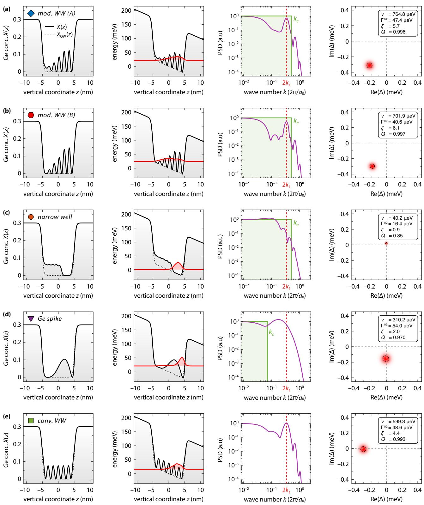
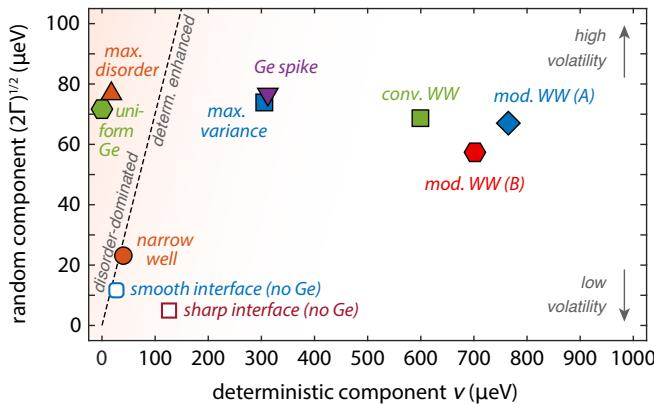
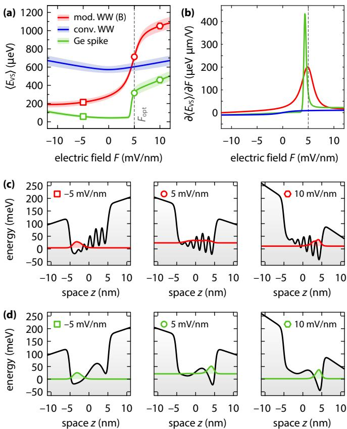

从启发式设计到变分优化
Si/SiGe 量子阱里，谷间耦合矩阵元可以被阱内的 Ge 浓度剖面 剪裁。文献中已有一系列启发式构型：摆动阱、锐界面、Ge 尖峰、窄阱与均匀 Ge 掺杂——每个构型都以特定方式同时影响谷间耦合的确定性分量与无序分量。本词条介绍的路线（Thayil et al. 2025）不再预设剖面形状，而是把总剖面写成固定量子阱形状加待优化修正
其中 是平滑台阶状的基准阱剖面， 是自由形状的优化变量；剖面通过导带偏移 进入纵向单谷哈密顿量，决定基态包络波函数 。
目标函数：确定性分量、无序分量与 Rice 分布
优化的”货币”是谷间耦合参数的统计分解。缓变包络+一阶简并微扰给出 ：确定性部分来自平均势，无序部分来自 Ge 原子随机占位的二项式涨落。大量格点贡献的中心极限定理使 服从复正态分布，于是谷劈裂
服从 Rice 分布： 是确定性分量（无序消失时的谷劈裂）， 是无序分量的方差，决定器件间涨落。两者之比用确定性分量比量化：
其中 ， 是第一类修正贝塞尔函数。 表示逐器件可复现； 时 ，确定性分量与无序分量贡献相当——这条 分界线把参数空间切成”确定性增强区”与”无序主导区”（后者正是均匀 Ge 掺杂阱里低劈裂热点仍在的原因，见Si/SiGe 异质结）。
三个正向优化目标据此定义（ 仅作无量纲化）：
- (A) 最大化确定性分量：；
- (B) 可靠增强：，同时压低无序、抬高确定性，等价于最大化 ；
- (C) 最小化无序分量：，直接压制涨落。
约束与谱约束：让解保持外延可行
总代价泛函 把目标与四类约束加在一起： 用伴随波函数 作空间分布的拉格朗日乘子，强制 是含 的薛定谔问题的基态； 用乘子 保证波函数归一化； 惩罚越出 （）的局域 Ge 浓度； 把阱内平均 Ge 浓度钉在预算 上——优化变成”在固定 Ge 预算内如何分布”的问题。
最关键的发明是谱约束。无约束优化几乎总收敛到 短周期摆动阱（周期 单层，接近原子层厚度，外延无法生长）。为排除这类解，把代价泛函中的剖面替换为低通滤波后的版本
其中 是量子阱指示函数（抑制滤波振铃泄出阱外）， 是矩形低通滤波器，截止波数 表征外延设备可实现的最高调制频率。梯度按相反顺序（先乘指示函数再滤波）获得；作者特别指出只滤梯度不滤泛函会造成函数—梯度失配、破坏收敛。数值上用 L-BFGS 加 Wolfe 线搜索最小化，从平坦剖面出发，罚参数 从 渐增到 。
优化出的构型

Ge 预算固定 时变分优化的解族：四列分别为外延 Ge 剖面、 下的势能与基态包络、乘积函数 的功率谱密度（PSD）、以及谷间耦合参数 在复平面的统计分布。目标 (A)/(B) 收敛到主波数近 的调制摆动阱，目标 (C) 给出窄阱，降低截止波数 后目标 (A) 给出 Ge 尖峰；最下排为常规 摆动阱对照。图源：Thayil et al. (2025), Fig. 2。
在 下，目标 (A) 与 (B) 都收敛到调制摆动阱：主导波数在 附近，
即由谷极小到（应变的）布里渊区边界的倒空间距离决定的长周期（，，）。它与常规正弦摆动阱的差别在于振幅沿 被非对称地调制以匹配电场压出的波函数分布：包络被拉伸到铺满整个阱域，与 Ge 调制的重叠最大化，共振被最优地激发——这一点直接体现在乘积函数
的 PSD 在 处的强峰上。目标 (C) 则给出窄阱：把 Ge 堆积成下界面附近的平台，电子被局域在无 Ge 的窄段里，与 Ge 原子的重叠减小、涨落被压低（、，确定性增强偏弱）。把 压到 以封锁 共振后，目标 (A) 给出Ge 尖峰：上界面下方约 3 nm 处的单个 Ge 峰，靠势与波函数的高阶效应间接激发 共振，但与 Ge 富集区的强重叠也带来大的无序分量。
反向目标同样有信息量：最小化确定性分量 (D) 给出（近）均匀 Ge 分布——其 PSD 在 处有尖锐凹陷，谷劈裂完全由无序贡献，这从优化角度解释了为什么均匀 Ge 阱平均劈裂抬高却仍是”热点温床”；最大化无序分量 (E) 给出波函数重叠区 Ge 加浓的剖面（窄阱的镜像）；最大化 Rice 分布方差 (F) 给出带非零基线 Ge 的摆动阱型结构。

各优化构型在 – 平面上的位置（Ge 预算 5%）：虚线 （对应 ）分隔无序主导区与确定性增强区。目标 (A)/(B) 的调制摆动阱深入确定性增强区且优于常规摆动阱；窄阱只有弱确定性增强；反向目标 (D)/(E) 的解深陷无序主导区。对照还给出阱内无 Ge、界面平滑（0.5 nm）与锐利（0 nm）的常规量子阱位置。图源：Thayil et al. (2025), Fig. 6。
电场可调性：从 200 µeV 到 1 meV 的开关

平均谷劈裂 随垂直电场 的变化（同样 5% Ge 预算）：非对称的调制摆动阱与 Ge 尖峰表现出强且非对称的场依赖（阴影为 Rice 分布 [25%, 75%] 分位带），可在高、低劈裂区间之间电学切换；常规摆动阱只有微弱且 对称的依赖。场灵敏度 在设计场 附近达到峰值；下方两排剖面显示波函数随场强被压入（或移出）Ge 富集段，非对称剖面的不同部分在高、低劈裂区间被分别探测。图源：Thayil et al. (2025), Fig. 4。
调制摆动阱的剖面非对称性带来一个意外的工程红利： 从大负场下的约 连续调到大正场下的超过 ，且全程确定性分量占主导（灵敏度峰值在设计场 附近）。机理是波函数的限域位置随电场移动——大负场下波函数不触碰 Ge 富集调制、结构表现得像普通平滑界面阱；大正场下波函数只压在最富 Ge 的区段上。作者指出这种宽范围可调性可用于按需切换高低谷劈裂：例如在两比特门或读出前压低声子辅助的谷弛豫速率、或在执行前确保确定的谷态（与自旋退相干中谷激发通道的控制互补）；对依靠能级劈裂调谐的杂化量子比特也有潜在用途。宽范围场调谐需要背栅等先进器件设计支持。
与其他概念的关系
- 谷劈裂：本词条的物理对象；其”统一理论”一节给出这里所用 Rice 统计、 共振与剪切应变机制的解析框架（应变设定为 、、沿 [110] 剪切应变 ，经经验赝势进入 Bloch 因子）。
- Si/SiGe 异质结：优化所设计的外延层 stack 本身；均匀 Ge 掺杂（Tunnel Falls 路线）在此框架中被判为无序主导区的解。
- 激光退火欧姆接触：优化的剖面以单层精度定义，后续工艺必须保住它不被热预算抹平。
- 自旋退相干与杂化量子比特：场可调谷劈裂的两个应用出口。
- 计算层面，剖面优化所依赖的包络函数模型本身的适用性与参考能唯一性问题，见谷劈裂词条”非局域多谷包络函数理论”一节。
参考文献
- Thayil, A., Ermoneit, L., Schreiber, L. R., Koprucki, T., Kantner, M. Optimization of Si/SiGe Heterostructures for Large and Robust Valley Splitting in Silicon Qubits (2025). arXiv:2512.18064（QAtlas 缓存：2512.18064）。
- 统一理论基础（Rice 统计、 共振与剪切应变解锁）：Thayil, A., Ermoneit, L., Kantner, M. Theory of Valley Splitting in Si/SiGe Spin-Qubits: Interplay of Strain, Resonances and Random Alloy Disorder. Physical Review B (2025). DOI: 10.1103/4sdz-f9cr；arXiv:2412.20618（QAtlas 缓存：2412.20618），另见谷劈裂词条参考文献。